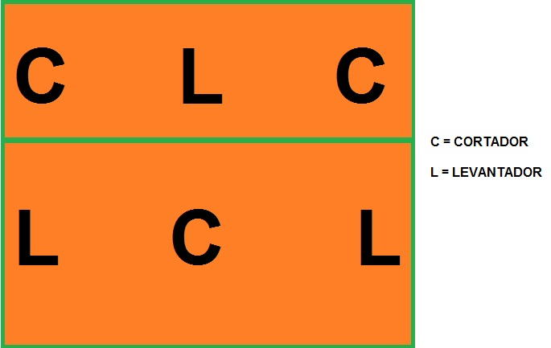

Sistema 3x3
Características:
A equipe possue 3 levantadores e 3 atacantes de forma intercalada;
Importante os atletas obterem entrosamento para o sucesso das partidas;
Boas possibilidade de um contra ataque eficiente;
Dificulta arremeços de 9 metros.
Sistema 4x2

Características:
4 atacantes e 2 levantadores;
Os levantadores ficam posicionados nas diagonais da quadra;
Torna o jogo mais ofensivo e dinâmico;
Não há Líbero;
A defesa se posiciona em forma de "w" para receber o saque.
Sistema 5x1

Características:
Há 1 levantador 5 atacantes (Pontas, Centrais e Oposto);
Não adequado para equipes iniciantes;
Utiliza o líbero;
Maior variação de jogadas de ataque.